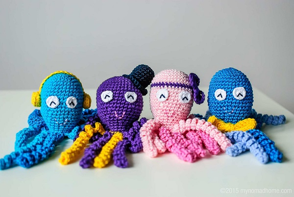

Welcome!
Project Preemie Homemade was started by a group of coworkers donating their time to make items for the preemie babies in Wake Forest Baptist Health Brenner's Children's Hospital's NICU. They strived to help support both the babies and their families.
About Preemies
Preemie children in the NICU have a very difficult time with regulating their internal temperature. One of the goals of the incubators used to help them is to help provide them with stable warmth and a suitable, clean evironment for them to continue to grow for several months while doctors and nurses work to ensure they are growing properly with minimal complications until they can leave the NICU and go home with their families. Part of the difficulties with preemie babies is not only temperature regulation but the fact that they should still be in uttero means that they need stimulations that are found inside the womb but that are not as easily replicated in the incurbators.
- 

One way to help them regulate temperature and provide ways to simulate aspects of the womb that the incubators cannot, is with homemade crafting projects that can be given to a family with a preemie in the NICU or donated directly to NICUs (preferred for sanitization reasons). These "craft" projects can be sewing, crochet, knitting, etc. that can easily be completed at home without a large financial dedication. This sight will endever to provide a gallery of these projects for users to choose from along with providing them with the best information about materials that can be used with preemies. While the materials used for all babies needs to be carefully chosen preemies are espceially sensitive to materials and fabrics. Each project will have its own page with the materials needed and the instructions needed for the project along with the information about where/whom the project is from.